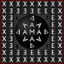
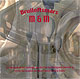

| 2013 |
Heins Jazzgitaar JB-V (2002)

Good Friday the 29th of March went a long-held dream in fulfillment.
From now on I got the privilege to play on a handmade jazz guitar by Wim Heins (13-4-1956 ~ 11-3-2017).
|
| 2009 |
MADEX opens the Sunsation Festival
On the 20th June, 4.50 a.m. with 'The Drowning Fields' during the longest day of the year on the Sunsation Festival.
Location: Observatorium Robert Morris on the Swifterringweg Lelystad.
|
| 2008 |
On the 20th of September was the MADEX-tryout 'The Drowning Fields - De Verdrinkende Velden'
During the opening of the exposition 'Ode aan het verloren polderland' in the gallery 'Op de zeebodem' schelpenbolweg 5 in Wieringerwerf
Under the title 'The Drowning Fields - De Verdrinkende Velden' MADEX wants to express the feelings of the landscape, parts of Wieringen and Wieringermeer, which (probably) will be inundated again in the (near) future.
|
|
On the 8th of Augustus 'EXMED on pilgrimage during Mijzenfestival'
The quest of our pilgrimage was translating sound into the mystic powers of this holy place on wednesday between 12:00 a.m. - 5:00 p.m. and 9:00 - 10:00 p.m. in the Mijzenpolder.
inspiration: primeval [religious] music from all times and places.
|
|
MADEX
| 
|
 |
drumkit - Bas Koppe
guitar - Geert Schoonbeek
| |
Madex translates into sound the madness of being confined and the ecstacy of release...
Madex pushes through...
Madex fills discarded location...!
|
2007 |
EXMED

|
|
Recorded live the 14th of july during sunset at the pavilion 'kvälröd' in Westerland.
|

|
|
Since July 2005 Bas Koppe - percussion and Geert Schoonbeek – soprano saxophone, have been searching for the liberation of sound in a sacred environment. This is achieved by, passionately and with enthousiasm, creating a space from sound an rythm. Ecstacy and meditation merge.
One year later the result is recorded in 5 recordings within 24 hours. A recording of this appeared 27-04-07 on a live double CD entitled 'EXMED 010705:220706' 
|
"Innovative Music - Geert Schoonbeek possesses the ability to create a wonderful sound" - Ben van den Dungen
|
| 2005 |
CD project 'Dante'
|
|
 |
|
A sound poem, inspired by 9 out of 111 pastels made by Juke Hudig based on Dante's Divina Commedia, created to accompany the exposition: 'Journey to Light' organized by the WEX Hippolytuskerk
Live recorded the 26th of January in the Hippolytuskerk
The Sound Poet - geertboard [= electric guitar as motherboard for sound cathedrals]
recording & production - Joran de Herder
|
|
|
On the 16th of June the quest for the soprano saxophone came to an end.
After being out of my life for 15 years, the saxophone is back!
I am immensely grateful to the instrument makers Borgani and to Remy & Friso from Amsterdamwinds
|
| 2004 | CD 'M & M Wedding march' 06-05-04 |
|
| 
|
|
Made on request for the wedding of Micon Schorsij en Marjo Bakker.
Recorded live the 26th of April in de Hippolytuskerk and the 29th of April in Sacha de Herders 'kitchen'.
The Sound Poet - church organ, kitchen sounds en geertboard
Sacha de Herder - kitchen percussion, recording en realization
|
|
Bonus track: String trio no.1 by The Sound Poet: "Everything All right? and the twilight zone of a conversation!" performed by the Prisma Strijktrio: Janneke van Prooijen - violin, Finn Moricke - viola en Michiel Weidner - cello. Recorded during the première by Sacha de Herder in the Hippolytuskerk the 28th of March.
|
|
| 2001 |
'Requiem for a cleared out stable'
|
|

|
|
This work is the translation into sound the last day of a dairy herd faced with culling. This is a response to government policy relating to the Foot and Mouth crisis in 2001.
The première took place in a cattle shed in Hippolytushoef on july the 22nd.
Cow-position - Geert Schoonbeek
Producer -Sacha de Herder
Musicians - the cows and milking shed of the Ruijter brothers.
|
"...The metallic sound of the cattle shed swells and becomes excitable. We hear the super melancholic lowing of the cows. You experience the sadness of the animals as they stand in deaths waiting room..."
[ Bert de Jong, Noord Hollands Dagblad 23-7-2001 ]
|
|
"Through pain, truth"
"This pilgrim takes the path of most resistance"
|